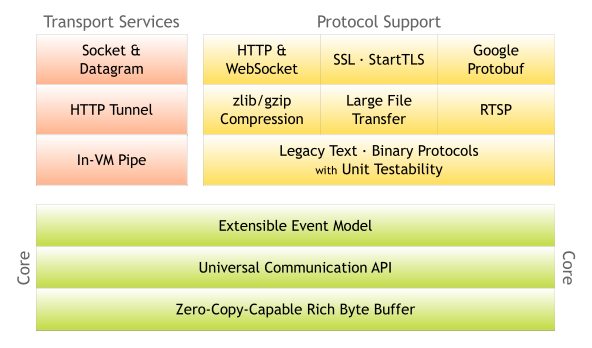

netty
Table of Contents
1 netty
- Netty: Home (Main.WebHome) https://netty.io/
- The Netty Project 3.x User Guide http://static.netty.io/3.5/guide/
- All documentation pages http://netty.io/wiki/all-documents.html
1.1 architecture

1.2 concept
1.2.1 Channel
可以认为是一个connection，这个connection上面有socket fd可以所以进行读写。
TODO(dirlt):只能够控制是否可读而不能够控制是否可写，事实上socket永远是可写的。所以需要非常注意的就是，一旦如果在非IO线程发起写操作的话，那么在IO线程随时都会有writeComplete等事件发生，这点对于顺序的控制至关重要。
1.2.2 ChannelFactory
创建Channel并且对Channel进行管理包括事件检测以及回调处理。涉及到管理那么就需要有线程池，这个线程池需要外部进行指定。
1.2.3 ChannelHandler
在这个connection上面的处理逻辑对象。总的来说有下面两种类型的handler
- ChannelUpstreamHandler 从net layer到app layer的数据流动处理逻辑
- ChannelDownstreamHandler 从app layer到net layer的数据流动处理逻辑
然后在这两种类型的handler上面派生很多其他的handler，比如
- SimpleChannelHandler 可以同时处理upstream和downstream
- Encoder/Decoder 协议的编码和解码
1.2.4 ChannelHandlerContext
这个ChannelHandler对应的context. 实际上是这个context是包含了handler. context内部有prev,next字段能够将pipeline里面的context组成链表。
实际上pipeline是将context组织成为链表结构，如果需要senndUpStream或者是sendDownStream的话，得到对应的context，从中取出handler，然后决定是否需要处理。
1.2.5 ChannelPipeline
1 Channel + N ChannelHandler，连接和这个连接上所有的处理逻辑对象。
所有的Handler组成为了链表，不管是upstream还是downstream都会流过所有的handler.netty框架会判断这个handler是否需要处理某个事件。
1.2.6 ChannelPipelineFactory
创建ChannelPipeline，主要是说明需要在这个Channel上面绑定哪些ChannelHandler.
1.2.7 ChannelEvent
连接上所有触发的事件，可以是但是不仅限于下面几种类型
- ChannelStateEvent 连接状态的变化事件
- MessageEvent 消息可读（可以是ChannelBuffer读取字节流，也可以是已经成帧的消息）
- WriteCompletionEvent 数据写完
- ExceptionEvent 异常事件，可能是IO线程问题也可能是ChannelHandler处理异常
NOTE(dirlt):对于某一个Channel来说，它的事件发生检测以及回调处理都是一个IO线程里面完成的
1.2.8 ChannelBuffer
这个和Channel倒是没有太大关系，比较偏向buffer的管理，主要针对网络通信这种read/write交互场景进行优化。
1.2.9 ChannelGroup
线程安全的Channel集合，如果Channel关闭的话那么会自动从group里面移除，能够对Channel进行批量操作。
1.3 使用问题
1.3.1 boss/worker executor
NioServerSocketChannelFactory构造函数需要指定boss/worker两个executor，有必要解释一下这两个对象的含义。
首先了解一下netty的网络模型
- boss创建accept fd之后阻塞调用accept. 一旦accept一个connection之后，将这个connection fd交给worker.
- NOTE（dirlt）：猜测分摊到哪个worker上的算法应该是round robin
- NOTE（dirlt）：早期netty版本只是支持一个boss线程做accept，但是一个现成做accept限制了性能，所以在后续版本支持多个现成做accept
- 允许绑定到多个端口，因为在boss线程里面也是使用epoll来做IO复用的。
- worker将这个connection fd加入到自己的epoll/selector里面，检测可读可写事件的发生
- boss/worker都是runnable对象，需要外部提供线程池来执行
worker的数量如果没有指定的话，with 2 * the number of available processors in the machine. The number of available processors is obtained by Runtime.availableProcessors() 也可以用这个构造函数可以指定 public NioServerSocketChannelFactory(Executor bossExecutor, Executor workerExecutor, int workerCount)
所以如果传入的worker executor使用newFixedThreadPool并且线程数目比较小的话，那么就会出现这个问题 "netty的固定个数的worker线程阻塞大量的并发连接" http://www.oschina.net/question/241182_40955 现象就是如果你的CPU core为4，那么就会创建8个worker对象，而如果线程数目使用5,那么浏览器创建第6个连接之后没有办法正常都写，原因就是因为boss创建第6个连接的时候，给第6个worker处理，而这个worker没有线程池可以run起来。
这个问题解决办法也非常简单，要不就使用newCachedThreadPool()，要不就自己指定worker IO thread数目，但是 必须确保创建的线程数目>=2*CPU core.
1.3.2 accept connection exception
Exception in thread "pool-2-thread-1" java.lang.InternalError
at sun.misc.URLClassPath$JarLoader.getResource(URLClassPath.java:755)
at sun.misc.URLClassPath.getResource(URLClassPath.java:169)
at java.net.URLClassLoader$1.run(URLClassLoader.java:194)
at java.security.AccessController.doPrivileged(Native Method)
at java.net.URLClassLoader.findClass(URLClassLoader.java:190)
at sun.misc.Launcher$ExtClassLoader.findClass(Launcher.java:229)
at java.lang.ClassLoader.loadClass(ClassLoader.java:306)
at java.lang.ClassLoader.loadClass(ClassLoader.java:295)
at sun.misc.Launcher$AppClassLoader.loadClass(Launcher.java:301)
at java.lang.ClassLoader.loadClass(ClassLoader.java:247)
at java.util.ResourceBundle$RBClassLoader.loadClass(ResourceBundle.java:435)
at java.util.ResourceBundle$Control.newBundle(ResourceBundle.java:2289)
at java.util.ResourceBundle.loadBundle(ResourceBundle.java:1364)
at java.util.ResourceBundle.findBundle(ResourceBundle.java:1328)
at java.util.ResourceBundle.findBundle(ResourceBundle.java:1282)
at java.util.ResourceBundle.getBundleImpl(ResourceBundle.java:1224)
at java.util.ResourceBundle.getBundle(ResourceBundle.java:705)
at java.util.logging.Level.getLocalizedName(Level.java:223)
at java.util.logging.SimpleFormatter.format(SimpleFormatter.java:64)
at java.util.logging.StreamHandler.publish(StreamHandler.java:177)
at java.util.logging.ConsoleHandler.publish(ConsoleHandler.java:88)
at java.util.logging.Logger.log(Logger.java:478)
at java.util.logging.Logger.doLog(Logger.java:500)
at java.util.logging.Logger.logp(Logger.java:700)
at org.jboss.netty.logging.JdkLogger.warn(JdkLogger.java:80)
at org.jboss.netty.logging.InternalLoggerFactory$1.warn(InternalLoggerFactory.java:128)
at org.jboss.netty.channel.socket.nio.AbstractNioSelector.run(AbstractNioSelector.java:316)
at org.jboss.netty.channel.socket.nio.NioServerBoss.run(NioServerBoss.java:42)
at org.jboss.netty.util.ThreadRenamingRunnable.run(ThreadRenamingRunnable.java:108)
at org.jboss.netty.util.internal.DeadLockProofWorker$1.run(DeadLockProofWorker.java:42)
at java.util.concurrent.ThreadPoolExecutor$Worker.runTask(ThreadPoolExecutor.java:886)
at java.util.concurrent.ThreadPoolExecutor$Worker.run(ThreadPoolExecutor.java:908)
at java.lang.Thread.run(Thread.java:662)
Caused by: java.util.zip.ZipException: error in opening zip file
at java.util.zip.ZipFile.open(Native Method)
at java.util.zip.ZipFile.<init>(ZipFile.java:127)
at java.util.jar.JarFile.<init>(JarFile.java:135)
at java.util.jar.JarFile.<init>(JarFile.java:72)
at sun.misc.URLClassPath$JarLoader.getJarFile(URLClassPath.java:646)
at sun.misc.URLClassPath$JarLoader.access$600(URLClassPath.java:540)
at sun.misc.URLClassPath$JarLoader$1.run(URLClassPath.java:607)
at java.security.AccessController.doPrivileged(Native Method)
at sun.misc.URLClassPath$JarLoader.ensureOpen(URLClassPath.java:599)
at sun.misc.URLClassPath$JarLoader.getResource(URLClassPath.java:753)
... 32 more
从这个excetion backtrace上看，似乎是log找不到出现的问题。
Bug 745866 – Possible netty logging config problem
这个同学在压力测试下面也出现了这个问题，主要原因还是netty没有办法accept connection. 这个可能还是和我们的资源配置有关，有可能是某个内核参数。
Got this error - Syahreza Pahlevi Ginting
- http://www.mentby.com/syahreza-pahlevi-ginting/got-this-error.html
- http://gleamynode.net/articles/1557/
这个同学的建议还是说和file-max/file limits有关。
NOTE（dirlt）：之后我调整了file limits之后便没有遇到这个问题了，所以可能确实和文件句柄数目限制有关
1.3.3 control timeout
网络上并没有太多如何关于netty读写超时信息的控制。下面是一篇相对来说比较有启发性的回答：
- Setting socket timeout on netty channel - Stack Overflow : http://stackoverflow.com/questions/3726696/setting-socket-timeout-on-netty-channel
但是这种方式在现实中意义却不大。分析ReadTimeoutHandler代码实现会发现， 我们没有办法将超时计算reset, 也没有办法将超时计算停止。而且一旦完成一次timeout计算之后，又会和触发下一轮的timeout计算。 对于WriteTimeoutHandler也是如此。
事实上我们是可以通过使用ReadTimeoutHandler/WriteTimeoutHandler来完成读写超时控制的，只不过不能够像在SO回答的那样写在PipelineFactory里面，而必须动态创建，而Pipeline和ChannelHandlerContext的设计为这种方法提供了可能。
以ReadTimeoutHandler为例
- 在发起读之前，我们可以通过channel.setReadable(false)来关闭读取
- 如果需要发起读的话，假设我们处理逻辑的ChannelHandlerContext为ctx
- 首先在ctx之前创建一个ReadTimeoutHandler ctx.getPipeline().addBefore(ctx.getName(),"rto", new ReadTimeoutHandler(timer, 10));
- 然后允许channel读数据 channel.setReadable(true)
- 如果10s之内没有数据的话，那么会触发一个ReadTimeoutException, 这样我们可以做后续处理。 NOTE(dirlt):这个ReadTimeoutException是timer内部线程触发的，但是无须担心多线程问题，因为timer会将这个Exception事件交给IO线程来触发
private void fireReadTimedOut(final ChannelHandlerContext ctx) throws Exception {
ctx.getPipeline().execute(new Runnable() {
public void run() {
try {
readTimedOut(ctx);
} catch (Throwable t) {
fireExceptionCaught(ctx, t);
}
}
});
}
@Override
public ChannelFuture execute(ChannelPipeline pipeline, final Runnable task) {
Channel ch = pipeline.getChannel();
if (ch instanceof AbstractNioChannel<?>) {
AbstractNioChannel<?> channel = (AbstractNioChannel<?>) ch;
ChannelRunnableWrapper wrapper = new ChannelRunnableWrapper(pipeline.getChannel(), task);
channel.worker.executeInIoThread(wrapper);
return wrapper;
}
return super.execute(pipeline, task);
}
- 如果在10s内有数据被处理的话，那么就会调用messageReceived回调，在回调里面我们可以删除这个handler ctx.getPipeline().remove("rto"); 这样便不会触发ReadTimeoutException
对WriteTimeoutHandler同理，因为我们不能够setWritable，所以必须在write之前就安装好handler
- ctx.getPipeline().addBefore(ctx.getName(),"wto",new WriteTimeoutHandler(timer,10));
- ctx.getChannel.write()
- 如果在10s内没有写完的话，那么就会触发一个WriteTimeoutException
- 如果在10s内写完的话，那么就会触发writeComplete回调，在回调里面我们可以删除这个handler ctx.getPipeline().remove("wto");